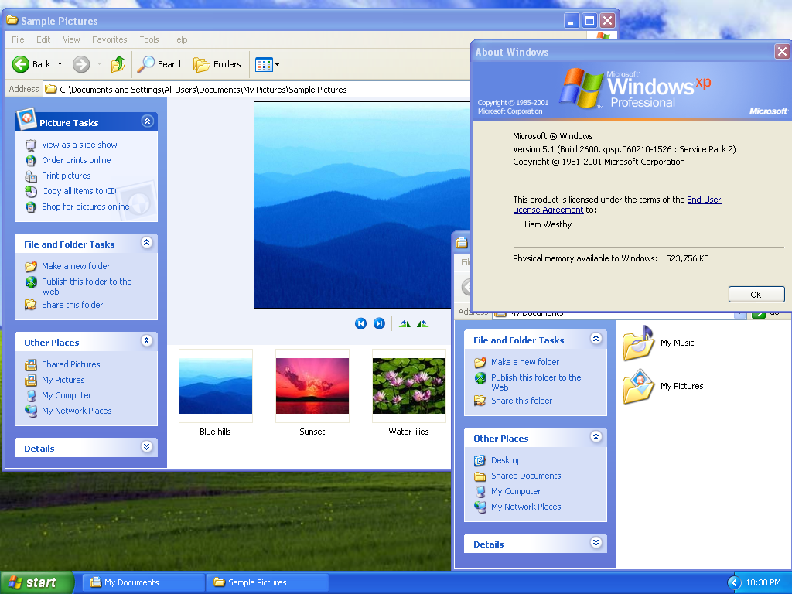
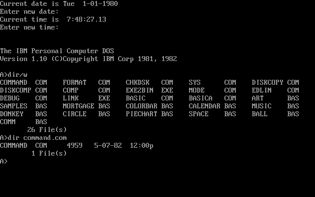
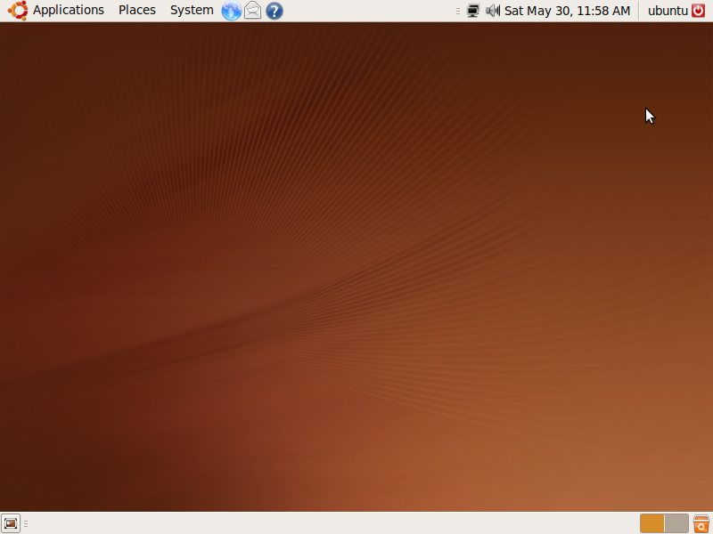

OPERATIVNI SISTEMI
| Općenito | Microsoft OS |
| Operativni sistem (OS) jeste skup računarskih programa koji upravljaju hardverskim i softverskim resursima računara. Operativni sistemi koji dijele vrijeme planiraju zadatke za efikasno korištenje sistema i mogu također uključivati računovodstveni softver za alokaciju troškova procesorskog vremena, masovnu pohranu, štampanje i druge resurse. Za hardverske funkcije kao što su ulaz i izlaz i dodjela memorije, operativni sistem djeluje kao posrednik između programa i hardvera računala,[1][2] iako kod aplikacije obično izvršava direktno hardver i često upućuje sistemske pozive na OS funkcioniše ili je prekinut zbog toga. Operativni sistemi se nalaze na mnogim uređajima koji sadrže računar – od mobilnih telefona i konzola za videoigre do veb servera i superračunara. |
 |
| Definicija | Komandni OS | Generalno, ne postoji kompletna i adekvatna definicija operativnih sistema. Lakše je definisati operativne sisteme po onome što oni rade, nego po onome što oni jesu. Postoji nekoliko različitih pogleda na operativne sisteme, koji su se razvijali uporedo sa razvojem istih, u kojima je počesto prisutna analogija sa nekim generalnim sistemima kao naprimjer u samom društvu. Operativni sistem se može uporediti sa vladom. Komponente računarskog sistema su hardver, softver, i podaci, a operativni sistem osigurava sredstva za pravilno korištenje navedenih komponenti. Poput vlade operativni sistemi ne izvršavaju operacije radi sebe samih, nego jednostavno osiguravaju okruženje u kojem drugi programi mogu obavljati koristan posao. Operativni sistem se može vidjeti i kao raspoređivač resursa (engleski: resource allocator), koji se u računarskom sistemu ponaša kao upravitelj (engleski: manager) kompjuterskih resursa kao što su CPU time ili ciklusi na procesoru, memorija, ulazno-izlazni uređaji itd., koje operativni sistem dodjeljuje specifičnim programima i korisnicima kako bi oni obavili " koristan" posao. Naravno, postoji još mnogo različitih pogleda i intuitivnih definicija operativnih sistema, ali ona koja se najčešće koristi u računarskim naukama kaže da je operativni sistem jedan program koji se cijelo vrijeme izvršava na kompjuteru, poznatiji pod nazivom kernel, s tim da se svi ostali dijelovi softvera posmatraju kao aplikativni programi. Najpoznatiji operativni sistemi su Microsoft Windows, Linux i Mac OS. |  |
| Svrha | Ubuntu OS |
| Svrha operativnih sistema je da osiguraju okruženje u kojima korisnici mogu izvršavati svoje programe. Svrha kao općiji pojam se sastoji iz ciljeva koji imaju precizniju definiciju. Primarni cilj operativnog sistema jeste da računar učini prikladnim i jednostavnim za upotrebu. A sekundarni cilj je da koristi hardver na što efikasniji način. Ova dva cilja prikladnost i efikasnost su često međusobno suprotstavljena.U prošlosti se veća pažnja poklanjala efikasnosti negoli prikladnosti i komforu samog korištenja računara, da bi se kasnije počelo više pažnje poklanjati samom korisniku računara. |  |